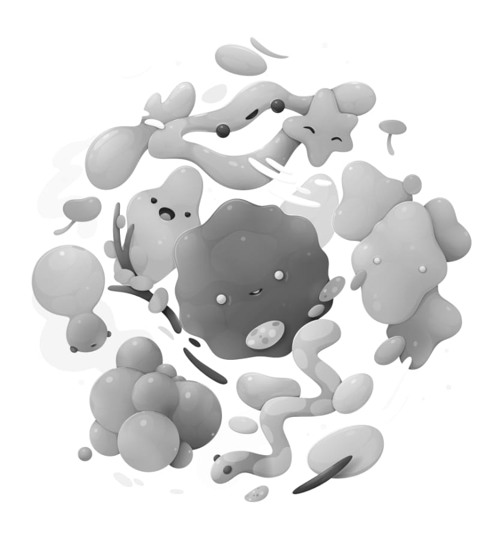

Black and White adjustment
Convert a color image to monochrome while maintaining full control over how individual colors are converted.


Convert a color image to monochrome while maintaining full control over how individual colors are converted.
This adjustment comes with a handy Picker setting which allows you to target a color in the document and adjust the applicable slider.
The following settings can be adjusted in the dialog: